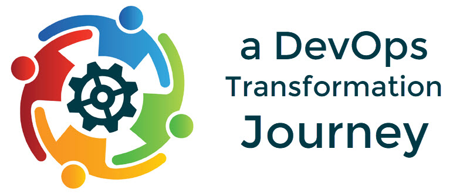

Skip to main content
Menu
My DevOps Journey
The Saga Begins
DevOps Into Practice
Transformation Tips
Cooking Up Awesomeness
🌜
🌞
My DevOps Journey
The Saga Begins
DevOps Into Practice
Transformation Tips
Cooking Up Awesomeness

My DevOps Journey with Chef
Let the Saga Begin